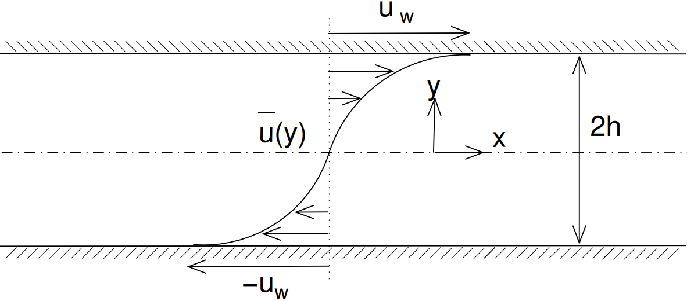

Consider a fully-developed turbulent flow of water in between two parallel plates as illustrated in the figure below. The plates move in opposite directions at a velocity $u=-u_w$ at $y=-h$ and $u=u_w$ at $y=h$ where $u_w=0.045\,\text{m/s}$. The mean flow is point-symmetric in $y=0$ (the channel centerline). It is given that $u_w/u_\tau \approx 15$, where $u_\tau=\sqrt{\nu \left(\partial \bar{u}/\partial y\right)_{y=h}}$ is the wall friction velocity. The half-channel height is equal to $h=0.025\,\text{m}$ and the kinematic viscosity of water is $\nu = 10^{-6}\,\text{m}^2/\text{s}$.

In index notation the full Reynolds-averaged Navier-Stokes (RANS) equations are given by \[ \frac{\partial \bar{u}_i}{\partial x_i} = 0, \tag{1a} \] \[ \frac{\partial \bar{u}_i}{\partial t} + \bar{u}_j\frac{\partial \bar{u}_i}{\partial x_j} = -\frac{1}{\rho}\frac{\partial \bar{p}}{\partial x_i} + \nu\frac{\partial^2 \bar{u}_i}{\partial x_j^2} - \frac{\partial \overline{u_i' u_j'}}{\partial x_j}. \tag{1b} \] (1) Given that the characteristic wall roughness height $s=0.1\,\text{mm}$, determine whether the channel is hydraulically smooth or rough.